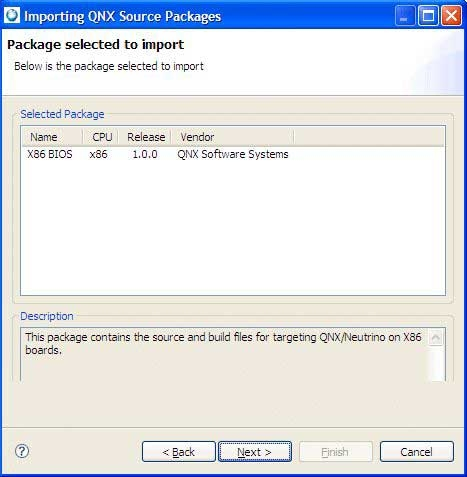

To copy a Source Package into your workspace, in the Import wizard (), expand QNX, choose QNX Source Package and BSP, and then click Next. The IDE shows the Import QNX Source Packages panel.

The Import wizard.
Although a BSP is, in fact, a package that contains source code, the two types are structured differently and generate different types of projects. If you try to import a BSP archive as a QNX Source Package, the IDE won't create a System Builder project.
Select the method that you want to use to import the package or BSP: from a local file archive, or from a SVN repository on Foundry27.

Selecting the method to use to import the source package.
If you select a package archive file, you'll need to specify a name in the File Name field, or click Browse to locate and select a file. After you choose the archive file type, by default the wizard presents you with a list of the packages on your host:

Choosing a package to import.
Notice that as you highlight a package in the list, the IDE shows a description for that package.
If you select a file from a SVN repository on Foundry27, you'll need to select a package:

Choosing a package to import from Foundry27.
Click Next.
Each source package contains several components (or projects, in IDE terms). For the package you selected, the wizard gives you a list of each source project contained in the archive:
You can decide to import only certain parts of the source package; simply uncheck the entries you don't want (they're all selected by default). Again, as you highlight a component, you'll see its description in the bottom pane.
Click Next.
The last page of the import wizard lets you name your source projects. You can specify:
- Working Set Name — to group all related imported projects together as a set.
- Project Name Prefix — for BSPs, this becomes the name of the System Builder project; for other source projects, this prefix lets you import the same source several times without any conflicts.
The Settings panel for specifying options for the project being created for the imported source package or BSP.
To specify the settings for the project being created:
- Optional: To change the destination directory for the projects, enter a new path in the Directory for Projects field, or click Browse… to select one. The default is your IDE workspace.
- Optional: In the Project Prefix field, type a prefix name that you'd like to use for the project other than the default one specified. This is prepended to the name of each project imported from the BSP.
- Optional: If this project is to belong to a working set (meaning that you want to group all related imported projects together as a set), select the Add project to working sets option, and then select the name of the working set to use for the BSP.
If this is the first time you perform a checkout from Foundry27, the SVN New Repository Wizard is displayed.

You'll need to specify your user ID and password that correspond to your Foundry27 account. In addition, you'll need to be successfully authenticated before you can proceed to the next panel in the wizard.
Click Finish to begin importing the package.
You might see a list of dependent package(s) with warning message at the bottom of the panel. The package won't build if you don't checkout the dependencies for the selected package.

The IDE sets up the required project properties (compiler options, build targets, and so on) so that the projects are able to build after the checkout process. In addition, the IDE maintains the source tree layout (to preserve the current status of the checked out source), sets up prebuilt and staging areas for the project, when necessary, and also creates the BSP project.
If you plan to import a BSP into the IDE, remember to give each project a different name.

If you add build variants, you need to copy the CPU-specific files to the new variant's build directories.
Click Next.
When you finish with the wizard, it creates all the projects and brings in the source from the archive. After the checkout of the BSP completes, right-click on the BSP project and select Build; the src project will be auto-built by the BSP project. The IDE will build all of the source under one project. Because the IDE creates a dependency between the BSP project and the src project, you don't need to build the src project; only the BSP project.
If you decide not to build now, you can always do a Rebuild All from the main toolbar's Project menu at a later time.
If you didn't import all the components from a BSP package, you can bring in the rest of them by selecting the System Builder project and opening the import wizard (right-click the project, and then select Import…). The IDE detects your selection and then extends the existing BSP (rather than making a new one).
When you import a QNX BSP, the IDE opens the QNX BSP Perspective. This perspective combines the minimum elements from the C\C++ Development Perspective and the System Builder Perspective.
QNX BSP perspective
When you import a QNX Board Support Package, the IDE opens the QNX BSP perspective, which combines the minimum elements from both the C/C++ Development perspective and the System Builder perspective:

The BSP perspective.